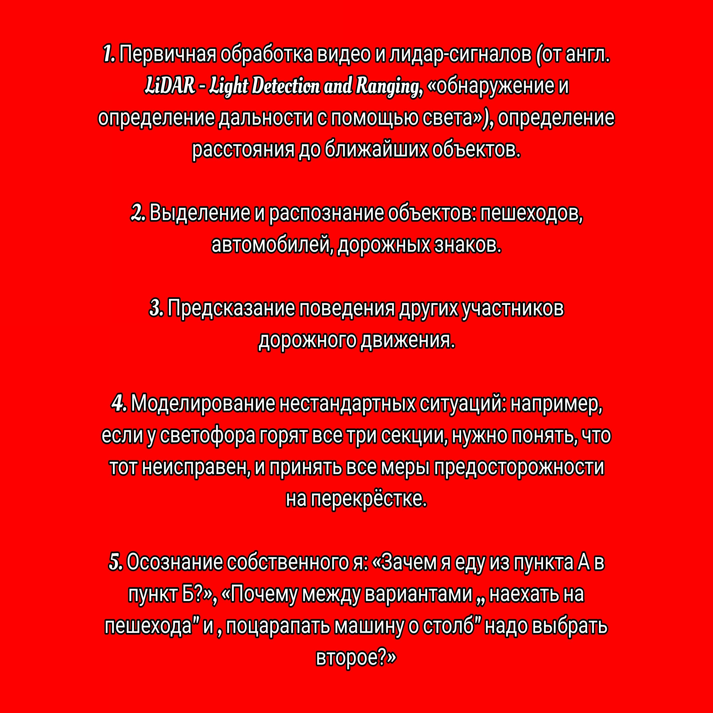

ИСКУСТВЕННЫЙ ИНТЕЛЕКТ
Искусственный интеллект — это способность компьютерных систем выполнять интеллектуальные и творческие функции, которые традиционно считаются человеческими.
Это определение, как и сам термин ИИ, было впервые озвучено в 1956 году на летнем семинаре в Дартмутском колледже, который организовали четверо американских учёных: Джон Маккарти, Марвин Ли Минский, Натаниэль Рочестер и Клод Шеннон. С тех пор понятие стало настолько популярным, что редко можно встретить человека, который о нём не слышал.
Сегодня технологии искусственного интеллекта используют в смартфонах, системах умных домов, медицине, образовании и промышленности. Однако эти разработки не могут в полной мере заменить человека: ИИ не обладает той же многозадачностью, в которой может работать человеческий мозг.
Чтобы понять, как устроен искусственный интеллект, рассмотрим элементы, которые необходимы для его создания ↓
Большие данные (от англ. Big Data) нужны для развития ИИ. Это база для глубокого обучения нейросетей.
Анализ больших данных (от англ. Data Mining) позволяет находить полезные и доступные решения в различных сферах человеческой деятельности. Мобильные устройства, облачные вычисления и интернет вещей расширяют экосистему больших данных, давая новые возможности для извлечения полезных знаний, выявления тенденций и настройки алгоритмов.
Искусственная нейронная сеть (ИНС) — система соединённых и взаимодействующих между собой простых блоков математических операций, моделирующих искусственные нейроны. В целом модель искусственной нейросети имитирует принципы сетей нервных клеток мозга живого организма. Такие системы не программируются в привычном смысле этого слова — они обучаются. Наибольшее применение нейронные сети нашли в программных приложениях, которые трудно выразить традиционным компьютерным алгоритмом, написанным на основе правил. Например, для работы с изображениями, видео, текстом и звуком.
Принцип работы нейросети можно рассмотреть на примере обучения простой модели, которая имеет архитектуру перцептрона.
Перед нами задача классификации изображений, когда нейросеть присваивает метки картинкам после идентификации изображённых на них объектов. Такие примеры решаются по принципу «обучение с учителем»: для тренировки модели нужно собрать полный набор размеченных изображений.

В процессе обучения с S-элементов нейросети на А-элементы из обучающего датасета поступает изображение объекта — например, кошки. Сигнал преобразуется и передаётся дальше на R-элементы нейросети — те, что, по сути, делают предсказание. Полученное предсказание сравнивается с разметкой эталона. Все элементы перцептрона связаны между собой, и у каждой связи есть вес — число, отвечающее за то, каким образом сигнал будет преобразован. Если в процессе обучения предсказание нейросети будет отличаться от эталонной разметки, веса нейросети изменятся так, чтобы в следующий раз предсказание для этой картинки было корректным. Соответственно, во время обучения веса нейронов автоматически меняются и балансируются по особым алгоритмам. Впоследствии, если обучение прошло хорошо, полученную нейросеть с выученным набором весов можно будет использовать для классификации новых изображений, которые не вошли в обучающий датасет.
Этот пример — сильно упрощённая модель как искусственной нейронной сети, так и биологической нейросети человека или животного. Архитектуры и топологии современных глубинных ИНС гораздо сложнее и масштабнее. Они имеют множественные слои ассоциативных элементов, способных структурировать и ранжировать информацию. Эти сети создают многоуровневые композиции из примитивных данных, которые позволяют моделировать сложные, нелинейные отношения.
Комбинируя различные виды архитектур ИНС, инженеры создают многокомпонентные системы для различных задач. Быстрее всего развиваются такие области, как компьютерное зрение, распознавание речи и аудио, обработка естественного языка, биоинформатика, генерация изображений, текстов и машинного кода.
Методы машинного обучения помогают компьютеру учиться решать задачи на основе множества примеров. После обучения машина способна решать те же задачи на новых данных, которые не видела в процессе анализа.
Например, чтобы научить систему распознавать изображения, специалисты используют большой массив изображений — датасет, с описанием, или разметкой, представленных на них объектов: человек, кошка, автомобиль и так далее. После загрузки массива картинок, по мере анализа полученной информации, программа учится самостоятельно идентифицировать объекты. Связь между нейронами, которые привели к правильному ответу, усиливается, а к неправильному — ослабляется. После многократных итераций сеть создаёт правильные нейронные соединения — в этот момент можно сказать, что система научилась верно решать задачу.
Насколько искусственный интеллект приблизился к человеческому
Искусственный интеллект уже решает множество задач, на выполнение которых у людей ушли бы тысячи часов: обыгрывает шахматных гроссмейстеров, выявляет переломы на рентгеновских снимках, выбирает самый быстрый маршрут для грузовика доставки, проводит тестирование компьютерных программ с экрана. При этом у ИИ из-за отсутствия какой-либо субъектности нет понимания того, как он выполняет эти задачи.
Чтобы понять, на каком уровне сознания сейчас находится ИИ, нужно рассмотреть принцип работы интеллекта человека. Здесь можно выделить основные этапы:
Если взять систему ИИ для беспилотных авто, каждый из этапов можно было бы охарактеризовать следующим образом:
Сегодня ИИ полностью освоил пункты 1 и 2 и частично реализовал пункт 3, усиленно развиваясь в этом направлении.
С пунктами 4 и 5 всё гораздо сложнее, поскольку их реализация выходит за границы бесхитростной логики машины. Здесь начинают играть такие понятия, как осознание своей личности и эго, бессознательное, эмоции, чувства. Та удивительная смесь индивидуальной биохимии, личного жизненного опыта и его интерпретации, которая делает нас теми, кем мы являемся — людьми в полном понимании этого слова.
Компьютерный интеллект, в отличие от человеческого мышления, не связан с эмоциями и особенностями личности. Да, системы на основе ИИ способны понимать и синтезировать речь, решать и действовать. Однако эти решения и действия не имеют никакой эмоциональной окраски — они основаны только на результатах обработки информации.
Можно с уверенностью сказать, что сегодня ИИ — это всего лишь множество интеллектуальных систем и их комбинаций, способных решать конкретные задачи: рисовать, водить автомобиль, проводить тестирование компьютерной программы или даже писать довольно крупные фрагменты кода. Однако о появлении общего искусственного интеллекта, обладающего разумом и самосознанием, пока говорить рано. Поэтому в противовес термину «общий ИИ» используется «слабый ИИ», чтобы обозначить технологию, которая пусть и может справляться с отдельными задачами лучше человека, но не обладает сознанием и не способна сравниться с интеллектом человека на широком спектре задач.
Технически современная наука может создать модель ИНС, которая по количеству нейронов будет сравнима с нейронной сетью кошки. Но мозг — это не просто массив отдельных нейронов, имеющих связь друг с другом. Это сложная динамическая система — её рабочие процессы до сих пор изучены далеко не полностью. Это же можно сказать и про сознание, многие принципы которого до сих пор неизвестны. Так что даже сознание кошки — цель для современного ИИ пока недостижимая. И выступает он сегодня только в качестве помощника, которые берёт на себя множество рутинных задач, требующих обработки больших массивов данных.
Одно из перспективных направлений в области развития ИИ — метод, согласно которому нейронная сеть самостоятельно исследует процесс создания искусственного интеллекта и вносит изменения в алгоритмы кода. Это позволяет ей не только изучать, но и улучшать свою топологию и архитектуру.
Один из ярких примеров этого способа — AutoML, проект компании Google, который использует автоматическое машинное обучение своих нейросетей. В процессе обучения ИНС сама подбирает алгоритмы, наиболее подходящие для выполнения той или иной задачи. Одновременно с этим алгоритмы-подборщики проходят обучение с людьми. Благодаря тому, что машина в единицу времени способна обработать огромные массивы информации и проанализировать миллионы различных вариантов написания кода, процесс обучения и развития ИИ идёт гораздо быстрее, чем если бы это делала группа программистов.
Учёные предполагают, что с учётом видимого роста производительности машин и совершенствования архитектуры нейронных сетей, систему, которая будет наиболее полно имитировать работу человеческого мозга, получится создать в 2030–2035 годах. Такой отдалённый прогноз имеет много условностей — погрешность в сроках довольно велика. Однако и ближайшее будущее ИИ несёт нам много интересных событий.